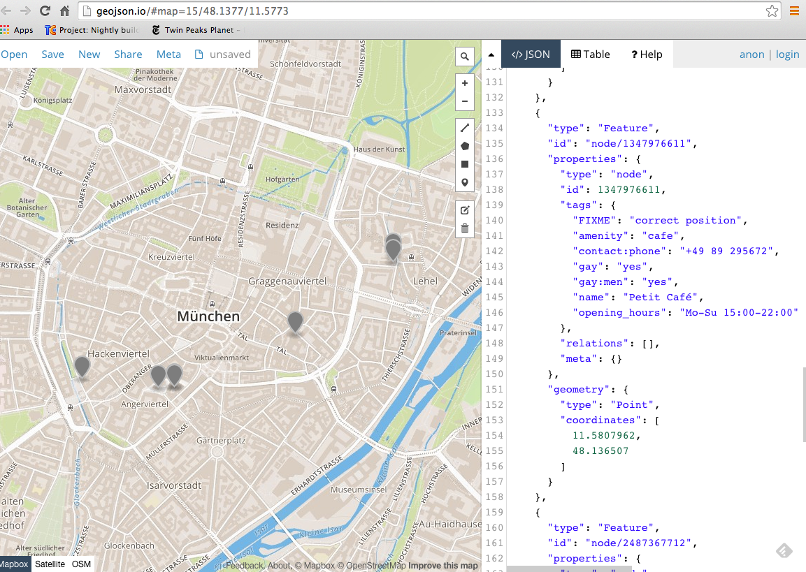

I’ve been learning about OpenStreetMap
and it’s wonderful query library Overpass
Turbo. Finding things in the real world with a geographical SQL-like language is
tremendous fun!
Just to blow your mind, here is a wonderful query (you can run it yourself in
Overpass here):
[out:json][timeout:25];
// in the stelvio park
rel(300032);
map_to_area -> .a;
(
node(area.a)[tourism="alpine_hut"];
way(area.a)[tourism="alpine_hut"];
relation(area.a)[tourism="alpine_hut"];
);
out body;
>;
out skel qt;
The query finds all the alpine huts in the Parco Nazionale dello Stelvio, a
beautiful national park in Italy. On the Overpass site after pressing the Run
button, you’ll see a map of the park now decorated with circles indicating the
alpine huts.
You can run this query from the command line. Simply paste the text above into a
file, say query.ql, and run on the command line with:
You’ll see JSON-formatted output with all the data. For more fun, pipe it to
geojsonio:
query-overpass query.ql | geojsonio
This will display the results in your browser, and you can see table formatted
data. You can also pipe text to query-overpass for really simple usage.
The goal of all this, for me, is to learn how to efficiently extract data from
OpenStreetMap for a hiking project I’m working on. One of the tricky things for
my work is that I need to define area queries in a deft way, since
bounding-boxes for my hike are too large. The hike is diagonal across the alps,
and instead of managing a series of overlapping bounding-box queries I want to
use named areas so I can execute queries like the Stelvio National Park query
above.
The essential reference manuals for doing this work are the
Overpass Query Language,
the taxonomy of OpenStreetMap metadata
(Map Features), and a good
tag database browser, TagInfo.
Finally, use the open source QGIS geographical
information system software to look at everything in one place. It natively
integrates with OpenStreetMap.
About that query
I didn’t explain the query at all, now let me do that. First off, where did the
magic number 300032 come from? Well I needed a bounded area for my query. I went
to overpass turbo and ran this query for
national parks within a bounding box of northern Italy:
[out:json];
relation[boundary=national_park](45.92822950933618,9.5855712890625,47.2195681123155,11.75811767578125);
out body;
>;
out skel qt;
I found two parks, the Italian one, given by relation id 300032 and a smaller
Swiss mark that is connected directly with relation id 113633.
In Overpass, some special handling is required to turn relation boundaries into
an area query. First, I query for the relation directly (rel(300032);), and
the output of that command serves as input to the next. This is boilerplate to
convert a relation to an Overpass area, and to store it in a named set a
(map_to_area -> .a;).
Now a disjunction (aka union, aka “or” query), gathers up all nodes, ways and
relations within area a that have the tag tourism with the value
alpine_hut.
That result is finally sent to output.
City queries
My work is more in the mountains at this point, but cities provide a fertile
ground for honing your Overpass query skills. In general I want to get away from
bounding boxes and do all searches within meaningful area entities. I looked at
my own city of Munich and tried to decipher good area queries. It was
surprisingly difficult. First, a visit to the OSM Map Features wiki for a look
at the boundary=administrative tag
(here). Each
country treats these tags somewhat differently. The tag admin_level is
important to select the right kind of boundaries. In Germany, level 6
corresponds to a county, level 8 to a town, level 9 to part of a city with a
council, and level 10 to a neighborhood. What seems to be a good region for me
is the level 9 boundary called Stadtbezirk 01 Altstadt-Lehel. This covers my
immediate neighborhood and also includes the inner ring and part of the English
Garden. How can I set up an area query that focuses on this region without any
magic numbers? It looks like that boundary name is specific enough I don’t have
to worry about it overlapping with anywhere else in the world, so I’ll just make
a query like this:
[out:json]
relation[name="Stadtbezirk 01 Altstadt-Lehel"];
map_to_area -> .a;
// gather results
(
// query part for: “boundary=administrative and admin_level=10”
node["leisure"="playground"](area.a);
way["leisure"="playground"](area.a);
);
// print results
out body;
>;
out skel qt;
I chose to save the query in a file, and run it with query-overpass:
> mvstanton$ query-overpass playground.ql | json features | json -a id
way/26644286
way/26645889
way/27169996
way/27816952
way/72267502
way/159091655
way/240884789
way/255064926
node/292679754
node/434488823
node/1391483468
Here I’m getting all Unixy, making use of the fact that the output is JSON, and
plugging it into a node.js utility (json) to filter
the data. Now I can authoritatively say there are 11 playgrounds in my district:
> query-overpass playground.ql | json features | json -a id | wc -l
11
Hmpf!
Let’s go one better. Playgrounds are important to kids and parents, but a nearby
coffee shop for the parents is heavenly. Let’s try to find coffee shops within
50 meters of a playground. Amazingly, all I have to do is add a line just before
printing the playgrounds, to transform them into a list of cafes nearby:
[out:json]
relation[name="Stadtbezirk 01 Altstadt-Lehel"];
map_to_area -> .a;
// gather results
(
// query part for: “boundary=administrative and admin_level=10”
node["leisure"="playground"](area.a);
way["leisure"="playground"](area.a);
);
node(around:50.0)[amenity=cafe];
// print results
out body;
>;
out skel qt;
With a little Unix work, I can just print the names and websites of these cafes:
> query-overpass cafes.ql | json features | json -a properties.tags.name properties.tags.website
Café Dukatz http://www.dukatz.de/
La Stanza http://www.la-stanza.de
Woerner's http://www.woerners.de/
Cafe am Jakobsplatz www.cafe-am-jakobsplatz.de
Petit Café
Casalingo
Café Makom http://cafe-makom.de/

I reckon I’ve earned a coffee followed by a vigorous workout on a nearby
swingset! Happy queries!
{kind=link}
{kind=link}
{kind=link}